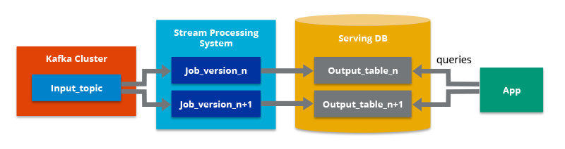

Arquitecturas Big Data¶
Ya sabemos en qué consiste Big Data, y que dentro de sus 5V, dos de las más importantes son el volumen y la velocidad. Para cumplir con estas necesidades, necesitamos una infraestructura que dote a nuestras aplicaciones de toda la potencia y robustez necesarias.
En esta sesión no vamos a entrar al detalle de ninguna tecnología, ya que el stack de herramientas es muy amplio y en constante crecimiento. A lo largo del curso iremos conociendo las distintas herramientas y aprenderemos cómo y cuándo utilizarlas.
Características¶
Todas las arquitecturas que diseñemos / utilicemos deben cumplir las siguientes características:
- Escalabilidad: permite aumentar fácilmente las capacidades de procesamiento y almacenamiento de datos.
- Tolerancia a fallos: garantiza la disponibilidad del sistema, aunque se produzcan fallos en algunas de las máquinas, evitando la pérdida de datos.
- Datos distribuidos: los datos deben estar almacenados entre diferentes máquinas evitando así el problema de almacenar grandes volúmenes de datos en un único nodo central.
- Procesamiento distribuido: el tratamiento de los datos se realiza entre diferentes máquinas para mejorar los tiempos de ejecución y dotar al sistema de escalabilidad.
- Localidad del dato: los datos a trabajar y los procesos que los tratan deben estar cerca, para evitar las transmisiones por red que añaden latencias y aumentan los tiempos de ejecución.
Antes de conocer las arquitecturas más empleados, es conveniente tener presente siempre cuál es el objetivo que debe cumplir nuestra solución. Es muy fácil caer en la sobreingeniería y montar una arquitectura con una amalgama de productos que luego son difíciles de configurar y mantener.
Tipos de arquitecturas¶
Debido a que las empresas disponen de un volumen cada vez mayor de datos y a la necesidad de analizarlos y obtener valor de ellos lo antes posible, surge la necesidad de definir nuevas arquitecturas para cubrir casos de uso distintos a los que había hasta el momento.
Las arquitecturas más comunes en estos proyectos son principalmente dos: Lambda y Kappa. La principal diferencia entre ambas son los flujos de tratamiento de datos que intervienen.
Un par de conceptos que tenemos que definir antes de ver las características de ambas, son el procesamiento batch y el procesamiento en streaming.
Procesamiento Batch¶
Batch hace referencia a un proceso en el que intervienen un conjunto de datos y que tiene un inicio y un fin en el tiempo. También se le conoce como procesamiento por lotes y se ejecuta sin control directo del usuario.
Es el procesamiento que se ha realizado desde los inicios del trabajo con datos, tanto a nivel de bases de datos como con Data Warehouses.
De la mano del procesamiento batch se ha implantado el ecosistema Hadoop con todas las herramientas que abarcan un proceso ETL (extración, transformación y carga de los datos). Estos conceptos los trabajaremos más adelante.
Procesamiento en Streaming¶
Un procesamiento es de tipo streaming cuando está continuamente recibiendo y tratando nueva información según va llegando sin tener un fin en lo referente al apartado temporal.
Este procesamiento se relaciona con el análisis en tiempo real.
Warning
No confundir tiempo real con inmediatez. En informática, un sistema de tiempo real es aquel que responde en un periodo de tiempo finito, normalmente muy pequeño, pero no tiene por qué ser instantaneo.
Arquitectura Lambda¶
Representada mediante la letra griega, apareció en el año 2012 y se atribuye a Nathan Marz.
Nathan Marz
La definió en base a su experiencia en sistemas de tratamiento de datos distribuidos durante su etapa como empleado en las empresas Backtype y Twitter, y está inspirada en su artículo How to beat the CAP theorem.
Su objetivo era tener un sistema robusto tolerante a fallos, tanto humanos como de hardware, que fuera linealmente escalable y que permitiese realizar escrituras y lecturas con baja latencia. Para ello, se compone de tres capas:
- Capa batch: se encarga de (a) gestionar los datos históricos y (b) recalcular los resultados, por ejemplo, de los modelos de machine learning. De manera específica, la capa batch recibe los datos, los combina con el historico existente y recalcula los resultados iterando sobre todo el conjunto de datos combinado. Así pues, este capa opera sobre el conjunto completo y permite que el sistema produzca los resultados más precisos. Sin embargo, esto conlleva un coste de alta latencia debido a los requisitos de tiempo de computación.
- Capa de streaming / speed: sirve para ofrecer resultados con muy baja latencia, cercano al tiempo real. Este capa recibe los datos y realizar modificaciones incrementales sobre los resultados de la capa batch. Gracias a los algoritmos incrementales implementados en esta capa, se consigue reducir el coste computacional de manera considerable.
- Capa de serving: permite la consulta de los resultados enviados desde las dos capas anteriores.
Podemos ver un esquema de la arquitectura en el siguiente gráfico:
https://www.paradigmadigital.com/techbiz/de-lambda-a-kappa-evolucion-de-las-arquitecturas-big-data/

El flujo de trabajo es el siguiente:
- La nueva información recogida por el sistema se envía tanto a la capa batch como a la capa de streaming (Speed Layer en la imagen anterior).
- En la capa batch (Batch Layer) se gestiona la información en crudo, es decir, sin modificar. Los datos nuevos se añaden a los ya existentes. Seguidamente se hace un tratamiento mediante un proceso batch cuyo resultado serán las Batch Views, que se usarán en la capa que sirve los datos para ofrecer la información ya transformada al exterior.
- La capa que sirve los datos (Serving Layer) indexa las Batch Views generadas en el paso anterior de forma que puedan ser consultadas con baja latencia.
- La capa de streaming compensa la alta latencia de las escrituras que ocurre en la serving layer y solo tiene en cuenta los datos nuevos.
- Finalmente, combinando los resultados de las Batch Views y de las vistas en tiempo real (Real-time Views), se construye la respuesta a las consultas realizadas.
https://www.ericsson.com/en/blog/2015/11/data-processing-architectures--lambda-and-kappa
Arquitectura Kappa¶
https://www.treelogic.com/es/Arquitectura_Kappa.html
El término Arquitectura Kappa, representada por la letra , fue introducido en 2014 por Jay Kreps en su artículo Questioning the Lambda Architecture.
En él señala los posibles puntos “débiles” de la Arquitectura Lambda y cómo solucionarlos mediante una evolución. Su propuesta consiste en eliminar la capa batch dejando solamente la capa de streaming.
Esta capa, a diferencia de la de tipo batch, no tiene un comienzo ni un fin desde un punto de vista temporal y está continuamente procesando nuevos datos a medida que van llegando.
Como un proceso batch se puede entender como un stream acotado, podríamos decir que el procesamiento batch es un subconjunto del procesamiento en streaming.
Esta evolución consiste en una simplificación de la Arquitectura Lambda, en la que se elimina la capa batch y todo el procesamiento se realiza en una sola capa denominada de tiempo real o Real-time Layer, dando soporte a procesamientos tanto batch como en tiempo real.

Podemos decir que sus cuatro pilares principales son los siguientes:
- Todo es un stream: las operaciones batch son un subconjunto de las operaciones de streaming, por lo que todo puede ser tratado como un stream.
- Los datos de partida no se modifican: los datos son almacenados sin ser transformados y las vistas se derivan de ellos. Un estado concreto puede ser recalculado puesto que la información de origen no se modifica.
- Solo existe un flujo de procesamiento: puesto que mantenemos un solo flujo, el código, el mantenimiento y la actualización del sistema se ven reducidos considerablemente.
- Posibilidad de volver a lanzar un procesamiento: se puede modificar un procesamiento concreto y su configuración para variar los resultados obtenidos partiendo de los mismos datos de entrada.
Como requisito previo a cumplir, se tiene que garantizar que los eventos se leen y almacenan en el orden en el que se han generado. De esta forma, podremos variar un procesamiento concreto partiendo de una misma versión de los datos.
Casos de uso¶
¿Qué arquitectura se adapta mejor a nuestro problema? ¿Cúal encaja mejor en nuestro modelo de negocio?.
https://www.ericsson.com/en/blog/2015/11/data-processing-architectures--lambda-and-kappa-examples
Por lo general, no existe una única respuesta. La arquitectura Lambda es más versátil y es capaz de cubrir un mayor número de casos, muchos de ellos que requieren incluso procesamiento en tiempo real.
Una pregunta que debemos plantearnos para poder decidir es, ¿el análisis y el procesamiento que vamos a realizar en las capas batch y streaming es el mismo? En ese caso la opción más acertada sería la Arquitectura Kappa.
Como ejemplo real de esta arquitectura podríamos poner un sistema de geolocalización de usuarios por la cercanía a una antena de telefonía móvil. Cada vez que se aproximase a una antena que le diese cobertura se generaría un evento. Este evento se procesaría en la capa de streaming y serviría para pintar sobre un mapa su desplazamiento respecto a su posición anterior.
Sin embargo, en otras ocasiones necesitaremos acceder a todo el conjunto de datos sin penalizar el rendimiento por lo que la Arquitectura Lambda puede ser más apropiada e incluso más fácil de implementar.
También nos inclinaremos hacia una Arquitectura Lambda si nuestros algoritmos de batch y streaming generan resultados muy distintos, como puede suceder con operaciones de procesamiento pesado o en modelos de Machine Learning.
Un caso de uso real para una arquitectura Lambda podría ser un sistema que recomiende libros en función de los gustos de los usuarios. Por un lado, tendría una capa batch encargada de entrenar el modelo e ir mejorando las predicciones; y por otro, una capa streaming capaz de encargarse de las valoraciones en tiempo real.
Para finalizar, hay que destacar lo rápido que evolucionan los casos de uso que queremos cubrir con nuestras soluciones Big Data, y eso supone que hay que adaptarse a ellos lo antes posible.
Cada problema a resolver tiene unos condicionantes particulares y en muchos casos habrá que evolucionar la arquitectura que estábamos utilizando hasta el momento, o como se suele decir: “renovarse o morir”.
Conclusión¶
A la hora de elegir tecnologías no te abrumes, ve poco a poco, aquí te dejo consejos que te podrán ayudar en tu diseño:
En la ingesta de información: evalúa tus tipos de fuentes, no todas las herramientas sirven para cualquier fuente, y en algún caso te encontrarás que lo mejor es combinar varias herramientas para cubrir todos tus casos. En el procesamiento: evalúa si tu sistema tiene que ser streaming o batch. Algunos sistemas que no se definen como puramente streaming utilizan lo que denominan micro-batch que suele dar respuesta a problemas que en el uso cotidiano del lenguaje se denomina como streaming. En la monitorización: ten en cuenta que estamos hablando de multitud de herramientas y que su monitorización, control y gestión puede llegar a ser muy tedioso, por lo que independientemente de que te decidas por instalar un stack completo o por instalar herramientas independientes y generar tu propia arquitectura combusto, te recomiendo además queutilices herramientas para controlar, monitorizar y gestionar tu arquitectura, esto te facilitará y centralizará todo este tipo de tareas. No desvíes tu camino, hay cosas que debemos tener siempre presentes: Seguramente según vayas adquiriendo experiencia en el diseño de arquitecturas Big Data, puedas ir aportándome ideas en este tema, pero por el momento desde mi punto de vista, estas son algunas de las principales respuestas que debes conocer antes de comenzar a diseñar una solución.
Enfoca tus casos de uso, cuando tengas tus objetivos claros sabrás que debes potenciar en tu arquitectura. ¿Volumen, variedad, velocidad, .. realmente lo necesitas todo? Define tu arquitectura: ¿batch o streaming?¿Realmente necesitas que tu arquitectura soporte streaming? Evalúa tus fuentes de datos: ¿Cómo de heterogéneas son tus fuentes de datos? ¿soportan las herramientas elegidas todos los tipos de fuentes de datos que tienes?